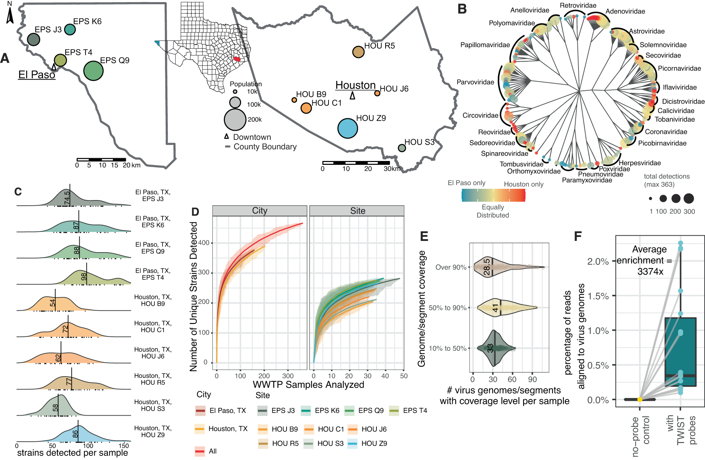
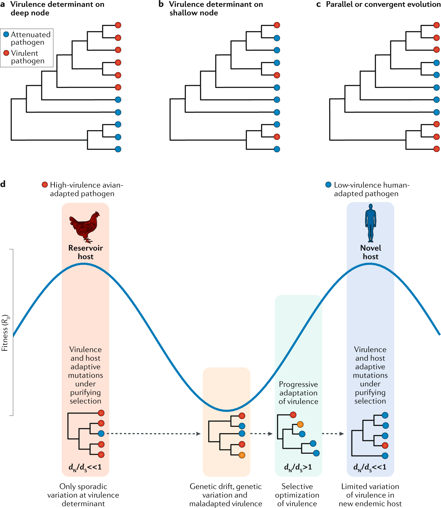

Recent Research
This page highlights recent scientific studies in virology and explains how modern tools track viral evolution in real time.
Key Takeaways
- Modern virology research focuses on tracking how viruses evolve, spread, and adapt in real time
- Techniques like genome sequencing and wastewater surveillance allow early detection of new variants
- Phylogenetic analysis helps scientists understand relationships between viral strains and track transmission patterns
- Different technologies (NGS, long-read sequencing, CRISPR diagnostics) each play a role in monitoring and controlling outbreaks
- Surveillance data has limitations, so scientists combine multiple methods to build a more complete picture of viral spread
Why “Recent Research” Matters
Virology changes fast: viruses mutate, recombine, and sometimes jump between species. Modern research focuses on understanding how viruses evolve and spread, and developing tools that detect changes early so public health responses can adapt. [31]
Highlights from Recent Studies
Below are examples of the kinds of studies scientists publish to track new variants, understand evolution, and improve surveillance. These will be written as short summaries.
🧫 Study 1: Wastewater sequencing can detect emerging variants early
Researchers sequenced thousands of wastewater samples and used computational methods to spot patterns of mutations over time. A major advantage of wastewater is that it captures signals from many infected people at once, including cases that never get tested. [27]

🧬 Study 2: Long-read sequencing helps reconstruct full viral genomes in mixed samples
Some samples contain multiple viruses or multiple closely related viral lineages. Long-read approaches can help assemble longer genome segments, which can make it easier to detect recombination events and correctly rebuild genomes from complex mixtures. [28]
🦠 Study 3: Avian influenza evolves through reassortment (gene segment “mixing”)
Influenza viruses have segmented genomes, so if two strains infect the same host, they can swap segments (reassortment). Surveillance studies document reassortment events and track how new combinations spread—important for monitoring spillover risk. [29]
🧪 Study 4: CRISPR-based diagnostics are expanding rapid viral detection
CRISPR systems can be engineered to recognize specific viral genetic sequences. Reviews of CRISPR diagnostics describe platforms and clinical translation challenges (accuracy, sample prep, scaling, and regulation), but the overall trend is toward faster and more portable testing. [30]
How Scientists Track Viral Evolution
Viral evolution is tracked by comparing genomes over time. Scientists look for mutations, recombination, and selection patterns, then connect those changes to transmission, immune escape, or host adaptation. [31]
🌳 Phylogenetic Trees
A phylogenetic tree is like a “family tree” built from genetic differences. Closely related samples cluster together, helping researchers infer transmission links, outbreak origins, and how lineages diversify. [31]

📈 Phylodynamics
Phylodynamics combines evolution + epidemiology. Instead of only asking “which variants exist?”, it asks “how fast are they spreading?” and “what does the genome data suggest about population-level transmission?” [31]
Modern Techniques Used Today
Modern surveillance often combines multiple tools (clinical sequencing + environmental sampling + modeling). Each method has strengths and limitations. [27]
🧪 Next-Generation Sequencing (NGS)
NGS reads viral genomes at scale. This allows researchers to track lineages, identify mutations linked to immune escape, and monitor spread across regions. [31]
🚰 Wastewater Genomic Surveillance
Wastewater can give an early warning signal at the community level—especially when clinical testing is limited. Sequencing wastewater can track variant turnover and detect novel mutation patterns. [27]
🧵 Long-Read Sequencing
Long-read sequencing (often associated with nanopore or similar approaches) can help reconstruct longer genome segments and can be useful when samples are mixed or when detecting recombination is important. [28]
🔬 Genomic “Mixing” in Segmented Viruses (Reassortment)
For segmented viruses like influenza, reassortment is a key evolutionary mechanism. Surveillance studies watch for new gene segment combinations that could affect host range or transmissibility. [29]
⚡ Rapid Molecular Diagnostics (Including CRISPR)
Faster testing supports faster containment. CRISPR diagnostics aim for speed and portability, but still face real-world constraints like sample handling, sensitivity, and validation. [30]
Tools at a Glance
| Technique | What It Does | Best For | Limitation |
|---|---|---|---|
| Clinical WGS (NGS) | Sequences viral genomes from patient samples | Tracking variants and outbreaks | Biased toward who gets tested |
| Wastewater sequencing | Detects viral signals from communities | Early warning + broader coverage | Harder to assign to individuals |
| Long-read sequencing | Reads longer genome fragments | Mixed samples, recombination analysis | Can be cost/quality dependent |
| Phylogenetics | Builds evolutionary trees from genomes | Transmission relationships, lineage history | Depends on sampling density |
| Phylodynamics | Links evolution to spread over time | Estimating growth/decline of lineages | Model assumptions affect results |
| CRISPR diagnostics | Detects specific genetic targets quickly | Rapid detection, portable testing | Validation + sample prep challenges |
| Influenza reassortment analysis | Tracks segment swapping between strains | Monitoring spillover/pandemic risk | Requires strong surveillance networks |
Summary of common modern virology techniques used for surveillance and evolutionary tracking.
Common Misconceptions
Myth: “A new variant always means the virus is more dangerous.”
Not necessarily. Many mutations do nothing, and “fitness” can mean different things (spreading faster vs. causing more severe disease). Scientists rely on multiple data sources—lab experiments, epidemiology, and genomics—before concluding what a variant changes. [31]
Myth: “Genomic surveillance sees everything.”
Surveillance depends on sampling. If sequencing drops, or if certain regions don’t sample much, lineages can spread “under the radar.” That’s one reason environmental monitoring (like wastewater) can be a strong complement to clinical sequencing. [27]